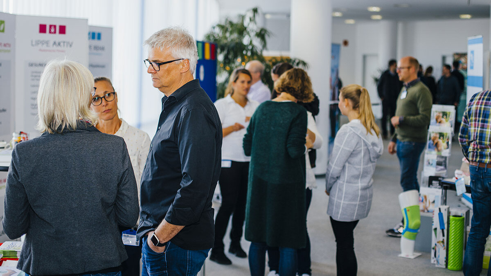
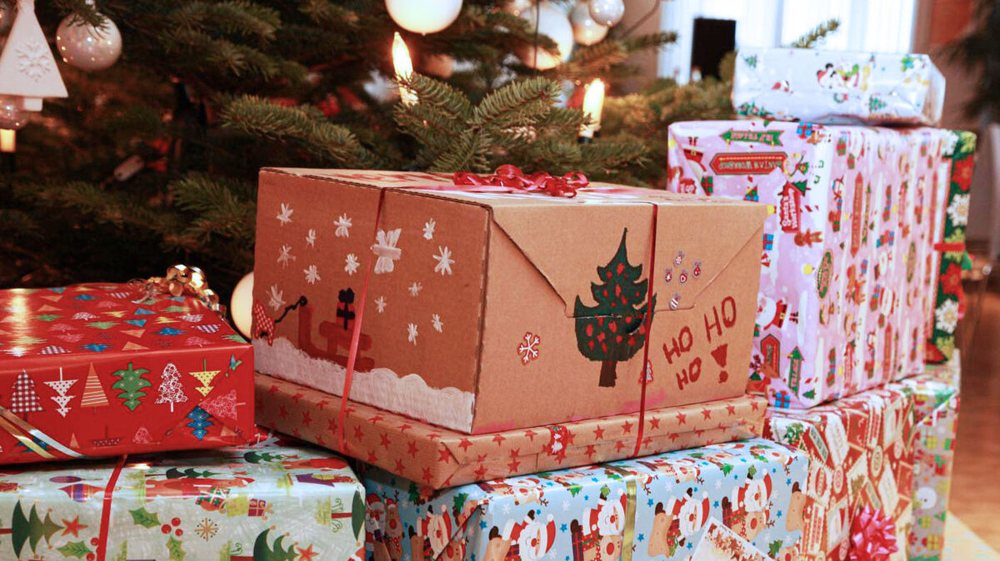
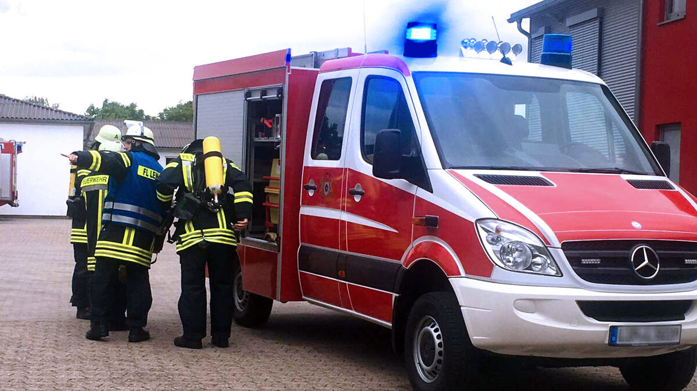
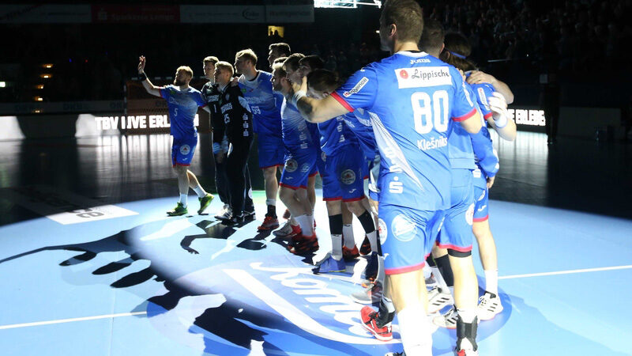

Schützen, was man liebt: Unsere Verantwortung.
Brasseler ist ein Familienunternehmen. Und als solches achten wir auch auf die folgenden Generationen. Wir möchten dazu beitragen, ihnen eine lebenswerte Welt zu hinterlassen. Ein Unternehmen wie Brasseler nimmt seine Verantwortung nicht nur gegenüber seinen Mitarbeitern, sondern auch gegenüber regionalen Organisationen, seinen Mitmenschen und der Umwelt sehr ernst.
Es gibt heute für Unternehmen viele Möglichkeiten, nachhaltige und soziale Maßnahmen in den Alltag einzubauen. Hier sehen Sie einen kleinen Ausschnitt, was wir tun – der Region, den Menschen und der Umwelt zuliebe.

Für die Region
Wir sind zwar ein international agierendes Unternehmen, sind aber mit unserem einzigen Produktionsstandort Lemgo sehr verbunden. Und das gehört auch zu unserem Selbstverständnis. Wir unterstützen vor allem regionale Projekte in den Bereichen Gesundheit, Integration, Sport, Bildung und Soziales.

Win-Win-Börse
Die Lemgoer Win-Win-Börse bringt regionale Organi-sationen sowie Unternehmen zusammen und ermöglicht einen Austausch auf Augenhöhe. Als Unternehmen können wir den Gemeinwohlorganisationen diverse Ressourcen zur Verfügung stellen und im gleichen Atemzug die vielfältigen Projekte kennenlernen.

Kinderweihnachtsfeier
Die Weihnachtszeit wird von den Allermeisten mit Besinnlichkeit und Geschenken assoziiert. Aber es gibt auch Familien, die ihren Kindern kein Weihnachtsfest bieten können. Um auch diesen Kindern eine Freude zu bereiten, arbeiten wir seit mehr als 10 Jahren mit der „Ambulanten Familienhilfe“ des Kreises Lippe zusammen.

Freiwillige Feuerwehr
Seit dem Jahr 2016 ist ein Vorauslöschfahrzeug der Freiwilligen Feuerwehr der Hansestadt Lemgo auf dem Firmengelände stationiert. Besetzt wird das Fahrzeug durch Mitarbeiter des Unternehmens, die sich in freiwilligen Feuerwehren im gesamten Kreisgebiet und darüber hinaus engagieren.

Spitzensport in Lemgo.
Um den Leistungssport in Lemgo voranzutreiben, unterstützen wir seit mehr als 20 Jahren den Handball-Bundesligisten TBV Lemgo Lippe, der ein besonderes Aushängeschild für die Region ist. Als Co-Sponsor des TBV Lemgo Lippe möchten wir natürlich den einheimischen Erstligahandball weiter fördern.
Fernwärme.
Was wir zum Heizen brauchen, beziehen wir zu 95 % aus lokaler, klimaschonender Erzeugung, genau gesagt mit Kraft-Wärme-Kopplung. Mit Fernwärme verbessert sich die CO²-Bilanz in Lemgo gegenüber Energiegewinnung durch Ölheizungen bis zu 40 Prozent.
Gründach.
Gründächer gewinnen die bebaute Fläche als Grünfläche zurück. Sie senken die Temperaturbelastung, denn die Dachoberfläche reflektiert keine stärkere Hitze und trägt so zur Verbesserung des Kleinklimas bei. Außerdem wird der Regen auf der Dachfläche gemindert in das Kanalnetz eingeleitet, was zur Entlastung des Kanalnetzes beiträgt.
Gründach.
Gründächer gewinnen die bebaute Fläche als Grünfläche zurück. Sie senken die Temperaturbelastung, denn die Dachoberfläche reflektiert keine stärkere Hitze und trägt so zur Verbesserung des Kleinklimas bei. Außerdem wird der Regen auf der Dachfläche gemindert in das Kanalnetz eingeleitet, was zur Entlastung des Kanalnetzes beiträgt.
Regenwassernutzung.
Jährlich decken wir 40 % des Wasserverbrauchs für die WC-Spülungen über die Regenwassernutzung ab.
Wärmerückgewinnung.
Die Abluftwärme unserer Lüftungsanlage wird zur Lufterwärmung genutzt, die Anlagen haben einen Wirkungsgrad von ca. 80 – 90 %. Die Abwärme von Kompressoren wird zur Erwärmung des Brauchwassers sowie zur Heizungsunterstützung genutzt. 70 % der eingesetzten Energie können zurückgewonnen werden. Das entspricht jährlich ca. 800 MWh.
Wärmerückgewinnung.
Die Abluftwärme unserer Lüftungsanlage wird zur Lufterwärmung genutzt, die Anlagen haben einen Wirkungsgrad von ca. 80 – 90 %. Die Abwärme von Kompressoren wird zur Erwärmung des Brauchwassers sowie zur Heizungsunterstützung genutzt. 70 % der eingesetzten Energie können zurückgewonnen werden. Das entspricht jährlich ca. 800 MWh.
Sonnenenergie.
Wir nutzen schon sehr lange Photovoltaik-Anlagen, kontinuierlich kommen neue hinzu. Unsere gesamte PV spart inzwischen jährlich über 87 Tonnen CO².
Recycling.
Seit 2018 hat Brasseler Papier, Pappe, Karton und Leichtverpackungen zum Recycling angemeldet. Dadurch wurden bisher rechnerisch 100 Tonnen Ressourcen und zusätzlich 14.951 Kilogramm Treibhausgase eingespart.
Recycling.
Seit 2018 hat Brasseler Papier, Pappe, Karton und Leichtverpackungen zum Recycling angemeldet. Dadurch wurden bisher rechnerisch 100 Tonnen Ressourcen und zusätzlich 14.951 Kilogramm Treibhausgase eingespart.
Abwasseraufbereitung.
Unsere modernisierte Abwasseraufbereitung sichert die Einhaltung der Grenzwerte, die oft sogar deutlich unterschritten werden.